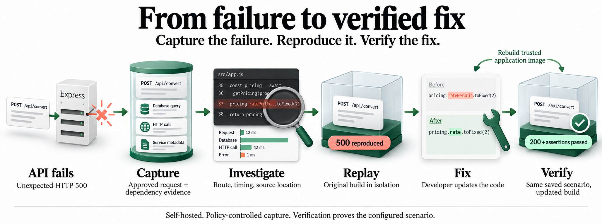

From a failed request
to a verified fix.
A visual guide to capturing a failed request and verifying a developer-written fix. Synthetic data and no live backend access.

The workflow
-
The request. A client sends
POST /api/convertwith amount 100 to an Express backend. - The failure. The pricing service returns rate 0.9 and currency EUR. The application reads a different field and throws a TypeError, returning HTTP 500.
- The evidence. Follow the captured request into its approved input, dependency response and source location.
-
The correction. Source evidence reveals the wrong field
access. The developer changes
pricing.ratePerUnit.toFixed(2)topricing.rate.toFixed(2). - The replay comparison. The original captured build reproduces HTTP 500 with controlled dependencies in isolation. The changed build returns HTTP 200 and a converted amount of 90 EUR; its business assertions pass.
- The whole story. The connected flow: capture, reproduce and verify. Historical builds, team access and alerts support continued investigation.
Try TimeMachine in your backend.
Open source, self hosted, and in active development. There is no public npm release yet.
Installation → · Express integration →